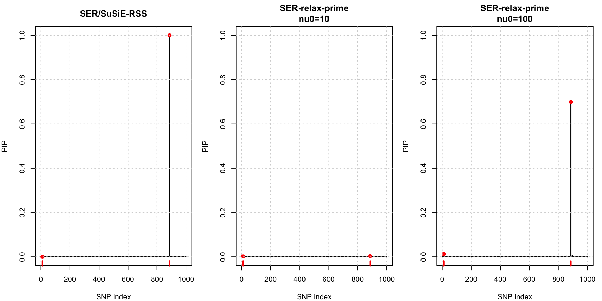
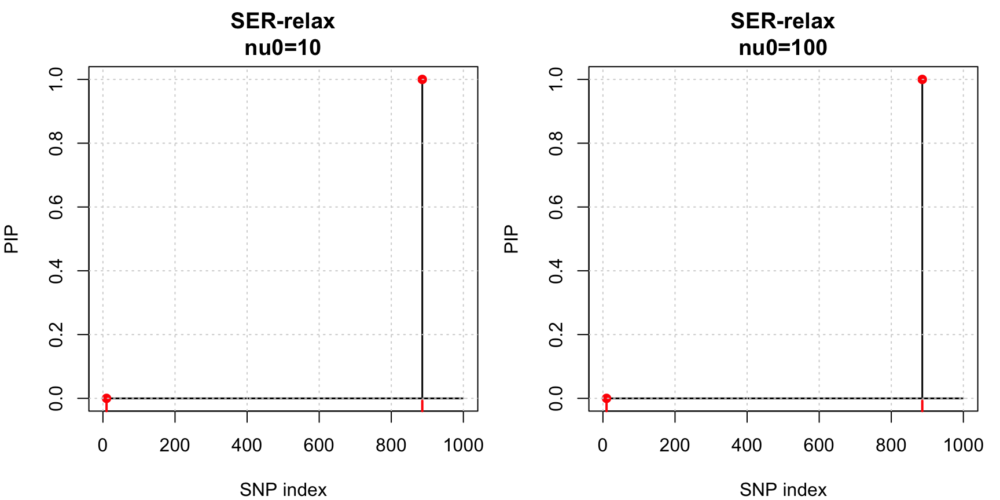
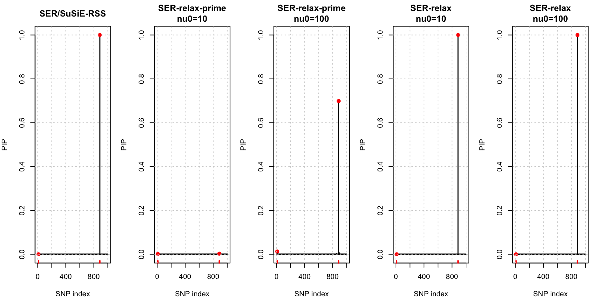
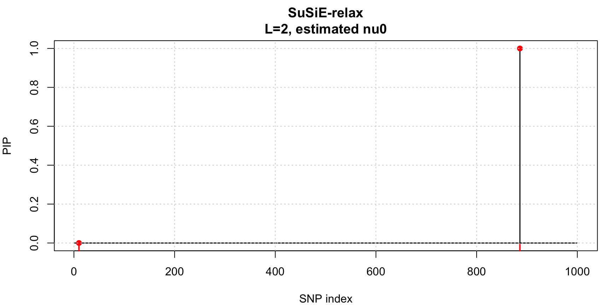
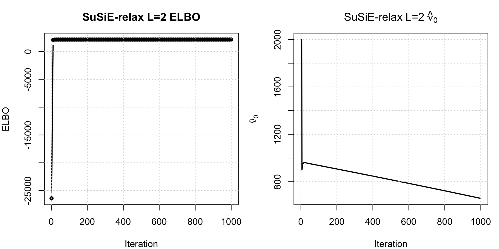

Last updated: 2026-06-25
Checks: 6 1
Knit directory: susie-relax/
This reproducible R Markdown analysis was created with workflowr (version 1.7.2). The Checks tab describes the reproducibility checks that were applied when the results were created. The Past versions tab lists the development history.
The R Markdown is untracked by Git. To know which version of the R
Markdown file created these results, you’ll want to first commit it to
the Git repo. If you’re still working on the analysis, you can ignore
this warning. When you’re finished, you can run
wflow_publish to commit the R Markdown file and build the
HTML.
Great job! The global environment was empty. Objects defined in the global environment can affect the analysis in your R Markdown file in unknown ways. For reproduciblity it’s best to always run the code in an empty environment.
The command set.seed(20260621) was run prior to running
the code in the R Markdown file. Setting a seed ensures that any results
that rely on randomness, e.g. subsampling or permutations, are
reproducible.
Great job! Recording the operating system, R version, and package versions is critical for reproducibility.
Nice! There were no cached chunks for this analysis, so you can be confident that you successfully produced the results during this run.
Great job! Using relative paths to the files within your workflowr project makes it easier to run your code on other machines.
Great! You are using Git for version control. Tracking code development and connecting the code version to the results is critical for reproducibility.
The results in this page were generated with repository version 9fdb56f. See the Past versions tab to see a history of the changes made to the R Markdown and HTML files.
Note that you need to be careful to ensure that all relevant files for
the analysis have been committed to Git prior to generating the results
(you can use wflow_publish or
wflow_git_commit). workflowr only checks the R Markdown
file, but you know if there are other scripts or data files that it
depends on. Below is the status of the Git repository when the results
were generated:
Ignored files:
Ignored: .DS_Store
Ignored: .Rhistory
Ignored: .Rproj.user/
Ignored: analysis/.DS_Store
Ignored: code/.Rhistory
Untracked files:
Untracked: .Renviron
Untracked: analysis/ser-relax-prime-pip-diffuse.Rmd
Untracked: analysis/susie-relax-prime-demonstrate.Rmd
Untracked: code/susie-relax-prime.R
Untracked: tex/SER-relax-irrelevance-null-SNPs.aux
Untracked: tex/SER-relax-irrelevance-null-SNPs.log
Untracked: tex/SER-relax-irrelevance-null-SNPs.out
Untracked: tex/SER-relax-irrelevance-null-SNPs.pdf
Untracked: tex/SER-relax-irrelevance-null-SNPs.synctex.gz
Untracked: tex/SER-relax-irrelevance-null-SNPs.tex
Untracked: tex/susie-relax-prime.aux
Untracked: tex/susie-relax-prime.log
Untracked: tex/susie-relax-prime.out
Untracked: tex/susie-relax-prime.pdf
Untracked: tex/susie-relax-prime.synctex.gz
Untracked: tex/susie-relax-prime.tex
Unstaged changes:
Modified: .Rprofile
Modified: analysis/index.Rmd
Modified: analysis/susie-relax-demonstrate.Rmd
Modified: code/SuSiE-relax.R
Note that any generated files, e.g. HTML, png, CSS, etc., are not included in this status report because it is ok for generated content to have uncommitted changes.
There are no past versions. Publish this analysis with
wflow_publish() to start tracking its development.
knitr::opts_chunk$set(
echo = TRUE,
message = FALSE,
warning = FALSE,
fig.width = 9,
fig.height = 4.5
)
source("code/sim_2pop.R")
source("code/SER-relax.R")
source("code/SuSiE-relax.R")For \(L=1\), SER/SuSiE-RSS and SER-relax-prime both rank SNPs only by \(x_j^2\). The only difference is the coefficient multiplying \(N x_j^2/2\). This page uses the coalescent simulation to generate \(x\) and \(R_0\), sets \[ \sigma_0^2 = \max_{j:\beta_j\ne 0}\beta_j^2, \] and compares the closed-form PIPs: \[ \mathrm{PIP}_{\mathrm{rss},j} \propto \exp\left\{ \frac{N}{2} \frac{N\sigma_0^2}{1+N\sigma_0^2} x_j^2 \right\}, \] and \[ \mathrm{PIP}_{\mathrm{prime},j} \propto \exp\left\{ \frac{N}{2} \left( \frac{N\sigma_0^2}{1+N\sigma_0^2} - \frac{N\sigma_0^2\tau^2}{1+N\sigma_0^2\tau^2} \right) x_j^2 \right\}, \qquad \tau^2=(\nu_0+3)^{-1}. \]
The comparison uses \(\nu_0=10\) and \(\nu_0=100\). The reference LD \(R_0\) is still generated by the simulation, but it does not enter these closed-form \(L=1\) PIPs because the \(R_0\)-dependent quadratic term is common across candidate causal SNPs and cancels in the normalization.
standardize_sim <- function(res) {
d <- 1 / sqrt(diag(res$R))
res$v <- d * res$v
res$R <- cov2cor(res$R)
res$R0 <- cov2cor(res$R0)
res
}
softmax <- function(x) {
z <- x - max(x)
exp_z <- exp(z)
exp_z / sum(exp_z)
}
ser_rss_pip <- function(x, N, sigma2) {
kappa <- N * sigma2 / (1 + N * sigma2)
softmax(0.5 * N * kappa * x^2)
}
ser_relax_prime_pip <- function(x, N, sigma2, nu0) {
tau2 <- 1 / (nu0 + 3)
kappa <- N * sigma2 / (1 + N * sigma2)
rho <- N * sigma2 * tau2 / (1 + N * sigma2 * tau2)
softmax(0.5 * N * (kappa - rho) * x^2)
}
coefficient_table <- function(N, sigma2, nu0_grid) {
t <- N * sigma2
rss <- t / (1 + t)
prime <- vapply(nu0_grid, function(nu0) {
tau2 <- 1 / (nu0 + 3)
rss - t * tau2 / (1 + t * tau2)
}, numeric(1))
data.frame(
method = c("SER/SuSiE-RSS", paste0("SER-relax-prime, nu0=", nu0_grid)),
nu0 = c(NA_real_, nu0_grid),
tau2 = c(0, 1 / (nu0_grid + 3)),
exponent_coefficient = c(rss, prime),
relative_to_rss = c(1, prime / rss)
)
}
pip_summary <- function(pip, label, rss_pip, causal) {
active <- pip > 0
entropy <- -sum(pip[active] * log(pip[active]))
data.frame(
method = label,
top_snp = which.max(pip),
top_pip = max(pip),
causal_total_pip = sum(pip[causal]),
effective_number = exp(entropy),
max_abs_diff_from_rss = max(abs(pip - rss_pip)),
corr_with_rss = suppressWarnings(cor(pip, rss_pip))
)
}
plot_pips <- function(pip_list, causal, beta_true) {
old_par <- par(no.readonly = TRUE)
on.exit(par(old_par), add = TRUE)
ymax <- max(unlist(pip_list))
par(mfrow = c(1, length(pip_list)), mar = c(4, 4, 3, 1))
for (nm in names(pip_list)) {
pip <- pip_list[[nm]]
plot(
seq_along(pip), pip,
type = "h",
lwd = 1.5,
ylim = c(0, ymax),
xlab = "SNP index",
ylab = "PIP",
main = nm
)
points(causal, pip[causal], pch = 19, col = "red")
rug(causal, col = "red", lwd = 2)
grid()
}
}N <- 20000L
J <- 1000L
N0 <- 100L
seed <- 6
nu0_grid <- c(10, 100)
res <- sim_2pop(
chrom = "chr22",
start = 20e6,
end = 21e6,
T_split = 20,
n_gwas = N,
n_ref = N0,
J = J,
h2 = 0.01,
seed = seed
)
res <- standardize_sim(res)
x <- res$v
R0 <- res$R0
beta_true <- res$beta_true
causal <- which(beta_true != 0)
sigma2 <- max(beta_true[causal]^2)
data.frame(
causal_snp = causal,
beta_true = beta_true[causal],
beta2 = beta_true[causal]^2
) causal_snp beta_true beta2
1 10 0.1259710 0.01586868
2 886 0.1791148 0.03208210sigma2[1] 0.0320821coefficient_table(N, sigma2, nu0_grid) method nu0 tau2 exponent_coefficient relative_to_rss
1 SER/SuSiE-RSS NA 0.000000000 0.9984439 1.00000000
2 SER-relax-prime, nu0=10 10 0.076923077 0.0183021 0.01833063
3 SER-relax-prime, nu0=100 100 0.009708738 0.1367654 0.13697857pip_rss <- ser_rss_pip(x, N, sigma2)
pip_prime <- lapply(nu0_grid, function(nu0) {
ser_relax_prime_pip(x, N, sigma2, nu0)
})
names(pip_prime) <- paste0("SER-relax-prime\nnu0=", nu0_grid)
pip_list <- c(list("SER/SuSiE-RSS" = pip_rss), pip_prime)
do.call(rbind, c(
list(pip_summary(pip_rss, "SER/SuSiE-RSS", pip_rss, causal)),
Map(function(pip, nm) pip_summary(pip, nm, pip_rss, causal),
pip_prime, names(pip_prime))
)) method top_snp top_pip
1 SER/SuSiE-RSS 886 1.000000000
SER-relax-prime\nnu0=10 SER-relax-prime\nnu0=10 886 0.002868085
SER-relax-prime\nnu0=100 SER-relax-prime\nnu0=100 886 0.698771722
causal_total_pip effective_number
1 1.000000000 1.00000
SER-relax-prime\nnu0=10 0.004545474 997.55035
SER-relax-prime\nnu0=100 0.711463404 13.41649
max_abs_diff_from_rss corr_with_rss
1 0.0000000 1.0000000
SER-relax-prime\nnu0=10 0.9971319 0.7416212
SER-relax-prime\nnu0=100 0.3012283 0.9997247plot_pips(pip_list, causal, beta_true)
Unlike SER-relax-prime, original SER-relax does not have a closed-form PIP that is simply a rescaled softmax of \(x_j^2\). Here we apply the single-effect SER-relax variational algorithm to the same simulated data, fixing \(\nu_0=10\) and \(\nu_0=100\), and compare its PIPs to the closed-form curves above.
J = dim(R0)[1]
Rbar = .99 * R0 + .01 * diag(1, J)
fit_ser <- lapply(nu0_grid, function(nu0) {
fit_ser_relax(
x = x,
Rbar = Rbar,
N = N,
sigma0 = sqrt(sigma2),
nu0_init = nu0,
estimate_nu0 = FALSE,
max_iter = 200,
tol = 1e-8,
verbose = FALSE
)
})
names(fit_ser) <- paste0("SER-relax\nnu0=", nu0_grid)
pip_ser <- lapply(fit_ser, `[[`, "pi")
do.call(rbind, Map(function(pip, nm) {
pip_summary(pip, nm, pip_rss, causal)
}, pip_ser, names(pip_ser))) method top_snp top_pip causal_total_pip
SER-relax\nnu0=10 SER-relax\nnu0=10 886 1 1
SER-relax\nnu0=100 SER-relax\nnu0=100 886 1 1
effective_number max_abs_diff_from_rss corr_with_rss
SER-relax\nnu0=10 1 1.976197e-13 1
SER-relax\nnu0=100 1 1.976197e-13 1plot_pips(pip_ser, causal, beta_true)
plot_pips(c(pip_list, pip_ser), causal, beta_true)
The single-effect SER-relax fit above can behave differently from the previous multi-effect analysis. To check the same data under the multi-effect model, fit SuSiE-relax with \(L=2\), estimate \(\nu_0\), and plot the resulting marginal PIP.
fit_susie_relax_l2 <- fit_susie_relax(
x = x,
Rbar = Rbar,
N = N,
L = 2,
sigma2 = rep(sigma2, 2),
nu0_init = 2000,
estimate_nu0 = TRUE,
estimate_sigma2 = TRUE,
warmup_iter = 5,
max_iter = 1000,
tol = 1e-7,
verbose = FALSE,
nu0_bounds = c(10, 10000),
sigma2_bounds = c(1e-12, 1),
elbo_update_interval = 10,
nu0_update_interval = 1,
sigma2_update_interval = 1,
nu0_tol = 1e-4
)
data.frame(
nu0 = fit_susie_relax_l2$nu0,
tau2 = fit_susie_relax_l2$tau2,
sigma2 = paste(sprintf("%.4g", fit_susie_relax_l2$sigma2), collapse = ", "),
gamma_hat = paste(fit_susie_relax_l2$gamma_hat, collapse = ", "),
top_alpha = paste(sprintf("%.3f", apply(fit_susie_relax_l2$alpha, 1, max)),
collapse = ", "),
causal_total_pip = sum(fit_susie_relax_l2$pip[causal])
) nu0 tau2 sigma2 gamma_hat top_alpha causal_total_pip
1 658.8325 0.001510956 0.619, 0.4944 886, 886 1.000, 1.000 1plot_pips(
list("SuSiE-relax\nL=2, estimated nu0" = fit_susie_relax_l2$pip),
causal,
beta_true
)
old_par <- par(no.readonly = TRUE)
on.exit(par(old_par), add = TRUE)
par(mfrow = c(1, 2), mar = c(4, 4, 3, 1))
elbo_iter <- which(!is.na(fit_susie_relax_l2$elbo))
plot(
elbo_iter,
fit_susie_relax_l2$elbo[elbo_iter],
type = "b",
pch = 16,
lwd = 2,
xlab = "Iteration",
ylab = "ELBO",
main = "SuSiE-relax L=2 ELBO"
)
grid()
plot(
seq_along(fit_susie_relax_l2$nu0_trace),
fit_susie_relax_l2$nu0_trace,
type = "l",
lwd = 2,
xlab = "Iteration",
ylab = expression(hat(nu)[0]),
main = expression("SuSiE-relax L=2 " * hat(nu)[0])
)
grid()
par(old_par)
sessionInfo()R version 4.5.2 (2025-10-31)
Platform: aarch64-apple-darwin20
Running under: macOS Tahoe 26.5.1
Matrix products: default
BLAS: /System/Library/Frameworks/Accelerate.framework/Versions/A/Frameworks/vecLib.framework/Versions/A/libBLAS.dylib
LAPACK: /Library/Frameworks/R.framework/Versions/4.5-arm64/Resources/lib/libRlapack.dylib; LAPACK version 3.12.1
locale:
[1] en_US.UTF-8/en_US.UTF-8/en_US.UTF-8/C/en_US.UTF-8/en_US.UTF-8
time zone: America/New_York
tzcode source: internal
attached base packages:
[1] stats graphics grDevices utils datasets methods base
loaded via a namespace (and not attached):
[1] Matrix_1.7-4 jsonlite_2.0.0 compiler_4.5.2 promises_1.5.0
[5] Rcpp_1.1.1 stringr_1.6.0 git2r_0.36.2 later_1.4.8
[9] jquerylib_0.1.4 png_0.1-9 yaml_2.3.12 fastmap_1.2.0
[13] reticulate_1.46.0 lattice_0.22-7 R6_2.6.1 workflowr_1.7.2
[17] knitr_1.51 tibble_3.3.1 rprojroot_2.1.1 bslib_0.10.0
[21] pillar_1.11.1 rlang_1.2.0 cachem_1.1.0 stringi_1.8.7
[25] httpuv_1.6.17 xfun_0.56 fs_2.1.0 sass_0.4.10
[29] otel_0.2.0 cli_3.6.6 withr_3.0.2 magrittr_2.0.4
[33] digest_0.6.39 grid_4.5.2 rstudioapi_0.18.0 lifecycle_1.0.5
[37] vctrs_0.7.1 evaluate_1.0.5 glue_1.8.0 rmarkdown_2.30
[41] tools_4.5.2 pkgconfig_2.0.3 htmltools_0.5.9
5 Comment on the results
We see that susie-relax-prime has near similar PIP to susie-rss when \(\nu_0\) is around 100, while it will be too diffuse when \(\nu_0\) is as small as 10.
Looking back at the
susie-relax-prime-demonstration.html, the highly mismatch case, we observe that the optimal \(\nu_0\) converge to 600, marking that the final PIP will be similar to susie-rss’s PIP.Looking back at the
susie-relax-demonstration.html, the highly mismatch case, we observe that the optimal \(\nu_0\) converge to the lower bound (10). But interestingly the PIP of that model is not diffused at all. It is still concentrated around the strongest associated SNP.To explain this difference between the two model: Recall the conditional probabilities in the two models, with the probability in
susie-relaxbeing denoted by \(p\) andsusie-relax-primebeing denoted by \(\tilde p\).\[ p(x | \beta, \gamma = j) = \mathcal{N}(x | \beta u_j(\mu_j), \tfrac{R}{N} + \beta^2 \tau^2 S_j^{pad}) \] and
\[ \tilde p(x | \beta, \gamma = j) = \mathcal{N}(x | \beta u_j(\mu_j), \tfrac{R}{N} + \sigma_0^2 \tau^2 S_j^{pad}), \] where
Let \(q = x^\top (\bar R)^{-1} x\), we have
\[ p(\gamma=j \mid x) \propto \int (1+N\beta^2\tau^2)^{-(J-1)/2} \exp\!\left(-\frac{N}{2(1+N\beta^2\tau^2)}q\right) \times \exp\!\left(-\frac{N^2\beta^2\tau^2}{2(1+N\beta^2\tau^2)}x_j^2 + N\beta x_j - \frac{N}{2}\beta^2\right) p(\beta \mid 0,\sigma_0^2)\,d\beta. \] On the other hand, \[ \tilde p(\gamma=j \mid x) \propto \int (1+N\sigma_0^2\tau^2)^{-(J-1)/2} \exp\!\left(-\frac{N}{2(1+N\sigma_0^2\tau^2)}q\right) \times \exp\!\left(-\frac{N^2\sigma_0^2\tau^2}{2(1+N\sigma_0^2\tau^2)}x_j^2 + N\beta x_j - \frac{N}{2}\beta^2\right) p(\beta \mid 0,\sigma_0^2)\,d\beta, \] Note that \(\sigma_0^2\) here is common for all \(j\) (and it does not depend on \(\beta\) so it can be brought out of the integral), therefore, \[ \tilde p(\gamma=j \mid x) \propto \int \exp\!\left(-\frac{N^2\sigma_0^2\tau^2}{2(1+N\sigma_0^2\tau^2)}x_j^2 + N\beta x_j - \frac{N}{2}\beta^2\right) p(\beta \mid 0,\sigma_0^2)\,d\beta, \]
which leads to
\[ \tilde p(\gamma=j \mid x) \propto \exp\left\{ \frac{N}{2} \left( \frac{N\sigma_0^2}{1+N\sigma_0^2} - \frac{N\sigma_0^2\tau^2}{1+N\sigma_0^2\tau^2} \right) x_j^2 \right\}. \]
The important distinction is not that the original
susie-relaxrelaxes low-Z SNPs more. It is closer to the opposite. In the original model, the amount of relaxation is tied to the latent effect size through \(N\beta^2\tau^2\). For a candidate SNP with large \(x_j\), the factor \[ \exp\left(N\beta x_j-\frac{N}{2}\beta^2\right) p(\beta\mid 0,\sigma_0^2) \] pulls the integral toward \(\beta\) values with the same sign as \(x_j\) and with magnitude roughly proportional to \(|x_j|\). Thus large-Z SNPs are precisely the SNPs for which the integral places mass on larger \(\beta^2\), and therefore on a larger effective relaxation \(N\beta^2\tau^2\). Null SNPs with \(x_j\approx 0\) keep most of their integral near \(\beta\approx 0\), so their effective relaxation is small.Another way to see this is to write the original local evidence as \[ p(\gamma=j\mid x) \propto \int H(\beta^2) \exp\left\{ N\beta x_j - \frac{N}{2}\beta^2 - A(\beta^2)x_j^2 \right\} p(\beta\mid 0,\sigma_0^2)\,d\beta, \] where \[ H(\beta^2) = (1+N\beta^2\tau^2)^{-(J-1)/2} \exp\left\{-\frac{N}{2(1+N\beta^2\tau^2)}q\right\} \] and \[ A(\beta^2) = \frac{N^2\beta^2\tau^2}{2(1+N\beta^2\tau^2)}. \] The \(H(\beta^2)\) term is common as a function of \(\beta^2\), but it cannot be cancelled outside the integral because the linear term \(N\beta x_j\) changes how each SNP weights different values of \(\beta^2\). Consequently, the original model does not simply apply one common flattening coefficient to all \(x_j^2\). The active SNP can get both a large effect-size posterior and the LD-column flexibility needed to explain the residual LD pattern. This is why a small \(\nu_0\) can still lead to concentrated PIPs.
In
susie-relax-prime, we replace \(\beta^2\) in the covariance by the fixed prior scale \(\sigma_0^2\). Therefore the determinant term and the \(q=x^\top\bar R^{-1}x\) term become \[ (1+N\sigma_0^2\tau^2)^{-(J-1)/2} \exp\left\{ -\frac{N}{2(1+N\sigma_0^2\tau^2)}q \right\}, \] which is common across \(j\) and can be pulled out of the normalization. What remains is exactly \[ \tilde p(\gamma=j\mid x) \propto \exp\left\{ \frac{N}{2} \left[ \frac{N\sigma_0^2}{1+N\sigma_0^2} - \frac{N\sigma_0^2\tau^2}{1+N\sigma_0^2\tau^2} \right] x_j^2 \right\}. \] Thus prime applies the same relaxation penalty to every SNP, independent of how strongly the data support a large \(\beta\) for that SNP. When \(\nu_0\) is small, \(\tau^2\) is large and the subtraction term can be large, so the coefficient multiplying \(x_j^2\) shrinks and the PIPs become more diffuse. This is a deliberate price paid by the prime approximation to obtain the irrelevance-of-null-SNPs property: for \(L=1\), PIPs depend only on \(x_j^2\), not on coordinate-specific LD-column fit.This also explains the empirical difference between the two demonstration pages. In the original
susie-relaxhigh-mismatch example, learning \(\nu_0=10\) means that the model wants substantial LD-column flexibility for effects that the data support. It does not imply diffuse PIPs. In thesusie-relax-primehigh-mismatch example, learning a much larger \(\nu_0\) is natural because a small \(\nu_0\) would impose a global flattening of the \(x_j^2\) evidence and would make the single-effect posterior too diffuse.